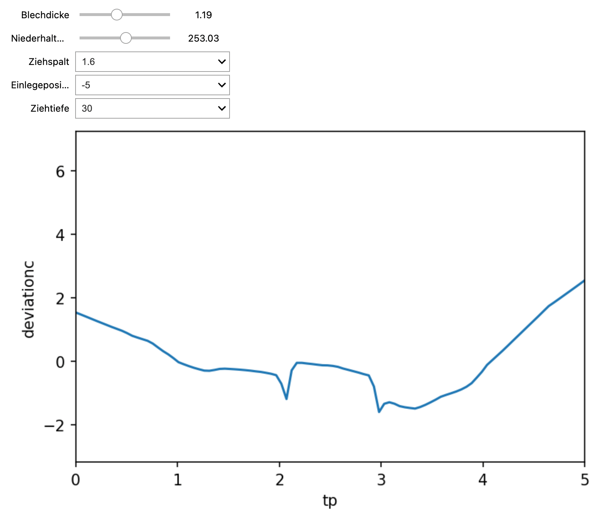

Usage#
Three prediction objects are provided depending on the dimensionality of the input positions:
CutPredictorfor 1D positions.ProjectionPredictorfor 2D positions.MeshPredictorfor 3D positions.
They only differ for a few methods, such as load_data() and predict(). Most methods are common, so we focus here on the 1D case with CutPredictor.
Loading the data#
Once the data is loaded as pandas Dataframes, it can be passed to the CutPredictor object:
reg = CutPredictor()
reg.load_data(
doe = doe,
data = data,
process_parameters = [
'Blechdicke',
'Niederhalterkraft',
'Ziehspalt',
'Einlegeposition',
'Ziehtiefe'
'Stempel_ID',
],
categorical = [
'Ziehspalt',
'Einlegeposition',
'Ziehtiefe'
'Stempel_ID',
],
position = 'tp',
output = 'deviationc',
index = 'doe_id',
)
One has to specify among all the columns present in the frames which ones are to be used as process parameters, which one is the input position and which one(s) is the output. If several output variables should be predicted, a list of names should be given. The name of the column containing the experiment ID should be provided.
Optionally, one can specify which process parameter is categorical (as opposed to numerical), i.e. takes discrete values. This only influences the training of the neural network, as categorical attributes are then one-hot encoded before being passed to the NN. This is however optional.
When the data is loaded in the CutPredictor, it is normalized to allow for efficient training, so this can take a while depending on the size of your data.
Training the network#
CutPredictor uses a feedforward neural network to perform the regression. It is a simple multi-layer perceptron with several layers of neuron, using the mean square error as a loss function.
The hyperparameters of the NN are:
- the number of layers and neurons.
- the learning rate.
- the dropout level for regularization.
- the batch size.
- the number of epochs
It may be tricky to find the right hyperparameters for your data. Two methods are available: an automatic one using the optuna library and a manual one.
Autotuning#
The autotune method launches a Bayesian optimization procedure thanks to the optuna library to find the best set of hyperparameters for the data. In a nutshell, it will train trials=100 different networks with hyperparameters sampled ffrom the specified ranges:
best_config = reg.autotune(
save_path='best_model',
trials=100,
max_epochs=50,
layers=[3, 5],
neurons=[64, 256, 64],
dropout=[0.0, 0.5, 0.1],
learning_rate=[1e-5, 1e-3]
)
The networks have diffrent number of layers, neurons per layer, learning rates and so on. The network with the best validation accuracy is finally selected and saved in the best_model/ directory. It can be used to make predictions.
The more trials you make, the more likely you will find a satisfying solution if the provided ranges are well chosen. But if the ranges are too wide, you will neeed many trials to find the optimal setup. The autotuning procedure can take a while depending on the number of trials, the size of the networks and the maximum number of epochs.
If you have multiple GPUs on the system, try to limit tensorflow training to one of them (e.g. GPU of id 0). If your code is in a script, use:
CUDA_VIDIBLE_DEVICES=0 python Script.py
In a notebook, run that cell first:
import os
os.environ["CUDA_DEVICE_ORDER"] = "PCI_BUS_ID"
os.environ["CUDA_VISIBLE_DEVICES"] = "0"
Manual selection#
If you prefer to do the optimization yourself, or fine-tune the architecture found by autotune by training it for more epochs, you can define the network using a dictionary:
config = {
'batch_size': 4096,
'max_epochs': 50,
'layers': [128, 128, 128, 128, 128],
'dropout': 0.0,
'learning_rate': 0.005
}
and train that model:
reg.custom_model(save_path='best_model', config=config, verbose=True)
The model's weights are saved in best_model/.
Single prediction#
To make a prediction for a (potentially new) set of process parameters, simply pass them as a dictionary to the predict() method:
x, y = reg.predict({
'Blechdicke': 1.01,
'Niederhalterkraft': 410.0,
'Ziehspalt': 2.4,
'Einlegeposition': -5,
'Ziehtiefe': 30,
'Stempel_ID': 3
},
positions=1000)
This will return 1000 values of the position x as well as the corresponding predicted outputs y (shape (1000, d), where d is the number of output variables).
The positions argument depends on the class:
- For
CutPredictor, it represents the number of points uniformly sampled between the min/max values of the position parameter. - For
ProjectionPredictor, it must be a tuple (m, n) for the shape of the sampled 2D positions, uniformly between the min/max values of those parameters. - For
MeshPredictor, it must be a (N, 3) numpy array of 3D coordinates for the N points where the prediction should be made.
Interactive visualization#
In a Jupyter notebook, you can use the interactive() method to get sliders for the process parameters and interactively visualize the predictions.
You first need to define a visualization method:
def viz(x, y):
plt.figure()
plt.plot(x, y[:, 0])
plt.xlabel('tp')
plt.ylabel('deviationc')
and pass it to the method, together with the same positions argument as for the predict() method:
%matplotlib inline # necessary in notebooks
reg.interactive(function=viz, positions=100)

Loading a pretrained network#
Once a suitable model has been trained on the data and saved in 'best_model', it can be used for inference.
If you do not want the data to be loaded for the prediction, you should save the data-related parameters (min/max values of the attributes, etc) in a pickle file:
reg.save_config("data.pkl")
This way, you can recreate a CutPredictor object without loading the data in memory:
reg = CutPredictor()
reg.load_config("data.pkl")
and finally load the weights of the trained model:
reg.load(load_path='best_model')
Alternatively, you can save both the configuration and the trained network in a single HDF5 file:
reg.save_h5(filename='best_model.h5')
and create a regressor for inference using the class method from_h5:
reg = CutPredictor.from_h5(filename='best_model.h5')
Optimization of the process parameters#
Once a model is trained or loaded, it can be used to predict which value of the process parameters minimize a user-defined criterion.
For example, if you want to minimize the average deviation over the 1D cut, you can define the following function:
def mean_deviation(x, y):
return y[:, 0].mean()
where x are the sampled input positions (useful if you want to restrict the objective function to a particular part of the input space) and y is a numpy array containing the predicted values for each output variable.
You can then pass this function to optimize(), which will sample the process parameters using Bayesian optimization (optuna) to find out the values that minimize the obective:
params = reg.optimize(mean_deviation, positions=100, nb_trials=1000)
The positions should have the same meaning as for the predict() method, depending on the actual class.
nb_trials specifies how many predictions will be made, the more the better.